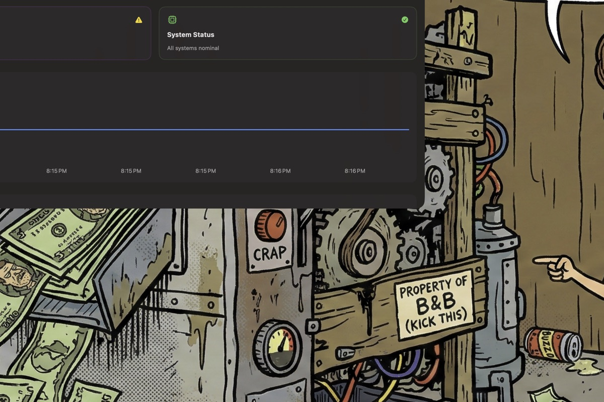
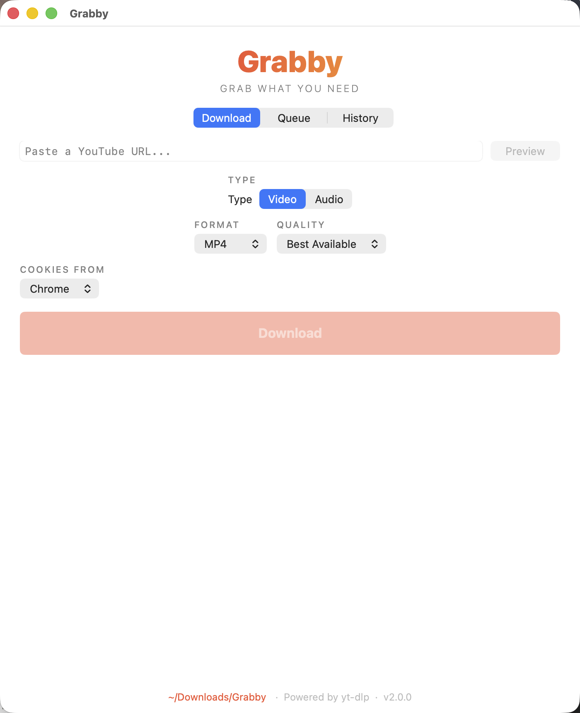
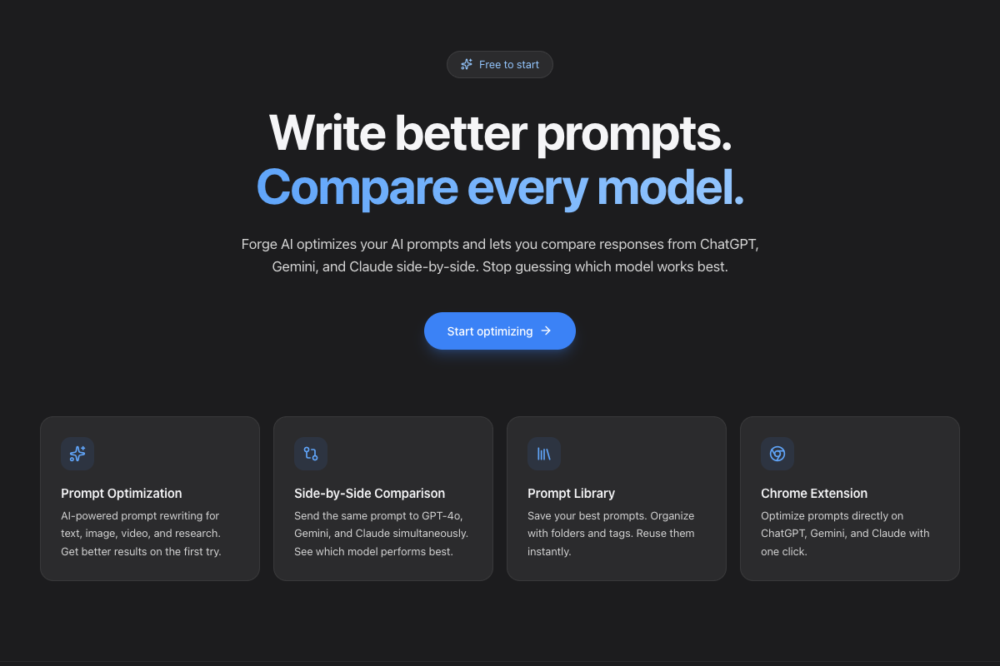

I make school tech work —
and build AI tools that didn't exist yet.
Senior IT Coordinator managing 500+ devices, supporting 320+ users, and building the tools my district didn't know it needed.
Selected Work
Advanced Privacy Dashboard
A full macOS app with 16 services monitoring your system in real time -- network traffic, DNS queries, threat detection, firewall rules, VPN status, GeoIP lookups, and HIBP breach checking. Reads live data from netstat, lsof, and TCC databases. Includes a WidgetKit extension for at-a-glance status. No black boxes.

Grabby
A native macOS YouTube downloader built with SwiftUI, wrapping yt-dlp and ffmpeg. Paste a URL, preview the video, pick your format, and download -- no browser extensions or Electron. Features a download queue, playlist support, format selection, download history with search, and cookie passthrough for age-restricted content. Ships as a self-contained 35MB DMG with a one-step build script.

Forge AI
Prompt optimizer and AI model comparison SaaS. Rewrite prompts with one click, then compare outputs across GPT-4o, Claude, and Gemini side by side. Full-stack product with a React web app, Chrome extension, and Cloudflare Workers backend. JWT auth, D1 database, per-endpoint cost modeling, and a tiered pricing plan. Live at forge.pinchelee.com.

More Projects
Prompt Eval CLI
Run the same prompt across 12+ LLMs in parallel, auto-score with a judge model, and diff results. One dependency.
Local RAG App
Local RAG pipeline with agentic ReAct reasoning loop. Upload PDFs, FAISS vector search, 3 tools for multi-step reasoning -- all local, no data leaves your machine.
Grabby
Native macOS YouTube downloader. SwiftUI app wrapping yt-dlp with playlist support, download queue, history, and cookie passthrough. 35MB self-contained DMG.
Aeries Gradebook Audit
Audits elementary gradebooks via Aeries SIS API. Auto-generates Google Sheets reports and per-teacher Gmail alerts.
Research Automation
Web scraping to AI processing to Notion pipeline. Handles bulk URLs, auto-transcription, and structured knowledge bases.
IIQ Reply
AI chatbot that auto-drafts and resolves Incident IQ help desk tickets using local LLMs and OpenAI.
Web Audio Synthesizer
Browser-based TR-808 drum machine with a 16-step sequencer and physically modeled sounds. Zero dependencies, pure Web Audio API with low-latency scheduling.
YouTube Lead Qualifier
AI-powered lead qualification for YouTube monetization consulting. YouTube Data API, GPT-4o channel scoring, Telegram bot interface, multi-channel notifications.
Mobile Ordering App
Campus cafe mobile ordering prototype with accessible components, form validation, and interactive UI.
Aeries MCP Server
Model Context Protocol server exposing Aeries Student Information System data to Claude Code. FERPA-safe logging, input validation, and schema-typed tools. Built for K-12 IT automation.
Local Orchestrator
Local AI task orchestrator that uses an Ollama-hosted LLM (DeepSeek R1 / Qwen 2.5) as the planner and dispatches work to Claude Code and Cowork-style executors. SQLite task queue, interactive CLI, executor lifecycle control.
AI Trading Bot Suite
Four AI-powered paper-trading bots targeting different data edges -- FDA drug approvals, SEC insider Form 4s, USDA commodity releases, and federal contracts/filings. Shared architecture: poll, filter, AI ensemble, fail-closed risk logic. A fifth bot (Polymarket) was retired after a detailed post-mortem.
About
I believe technology should empower people, not intimidate them.
Over 5 years in IT, I've gone from Technician to Senior Coordinator at a multi-site public school system. I translate user needs into technical solutions and build the tools that don't exist yet.
Currently
- Transitioning into AI/ML and applied AI engineering
- Senior IT Coordinator at TEACH Public Schools
- Studying UX Design at WGU
- Building AI tools for K-12 education (Aeries SIS)
- Based in Los Angeles, CA
"During my first week, I was thrown into the deep end -- tasked with fixing devices and an organizational unit left in disarray. Despite barely knowing anything at the time, I managed to resolve it all. That experience taught me that determination and resourcefulness can solve almost anything."
Tools & Tech
Certifications
Experience
TEACH Public Schools
2021 - Present
Went from Technician to Senior Coordinator in 3 years. I'm the primary tech support for 20+ staff and 300+ students across multiple sites -- managing device deployment, MDM configuration, and system security. Built a mobile device distribution system optimized by class size, grade level, budget, and E-rate requirements. Identified and led the response to a critical security breach affecting district-wide accounts.
After-School All-Stars
Instruction Lead Sep 2023 - Jul 2024Designed and delivered STEM curriculum for diverse student populations.
Education
Blog
I Built a 27,000-Line Trading Bot and It Lost Every Dollar
A post-mortem on Polybot -- an AI prediction-market bot that reported 140% returns for weeks, until I found the one-line bug that made every trade a phantom.
Read more March 2026I Built a SaaS and Chrome Extension in One Session
How I shipped Forge AI -- a prompt optimizer web app and Chrome extension -- from zero to production on Cloudflare, with a full security audit along the way.
Read more April 2026Local vs Cloud LLM Routing from Production Experience
How I built a regex router that keeps 84% of student data queries off the cloud -- reducing FERPA disclosure, cutting latency from 9 seconds to 3 milliseconds, and creating an auditable compliance trail.
Read more February 2026Building AI Bots That Run 24/7 on a Raspberry Pi
How I designed and deployed multiple AI-powered trading bots to a $35 computer -- covering architecture decisions, async Python patterns, and remote monitoring with Telegram.
Read more January 2026Why I'm Studying UX Design as an IT Professional
The overlap between IT support and user experience is bigger than most people think. Here's why understanding design principles makes me a better technologist.
Read moreLet's build something.
Whether you're facing a technical challenge or want to talk about making technology more accessible -- I'm all ears.
View My Resume